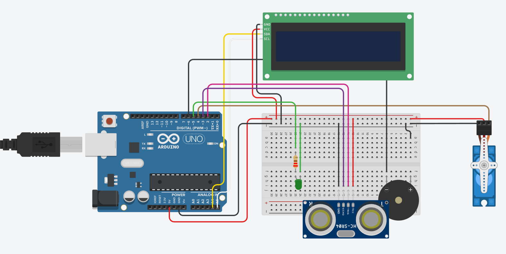
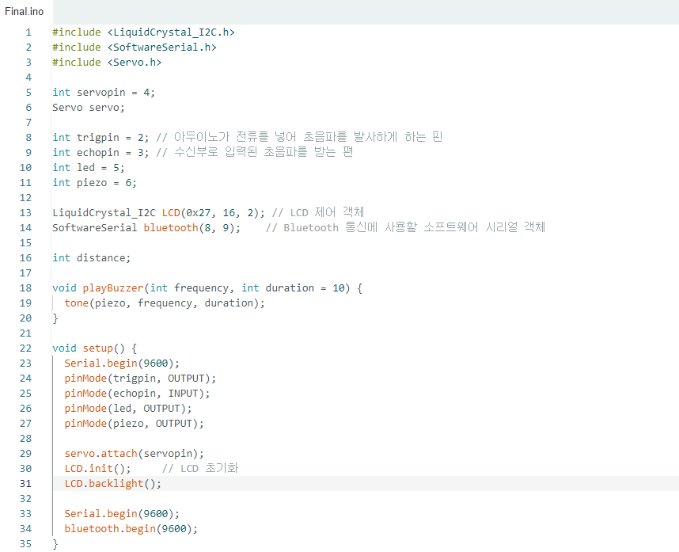
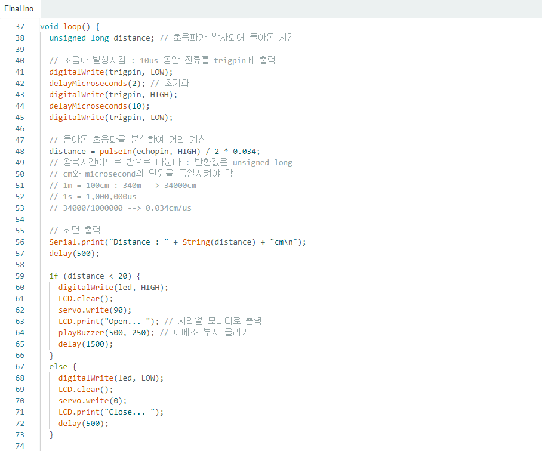
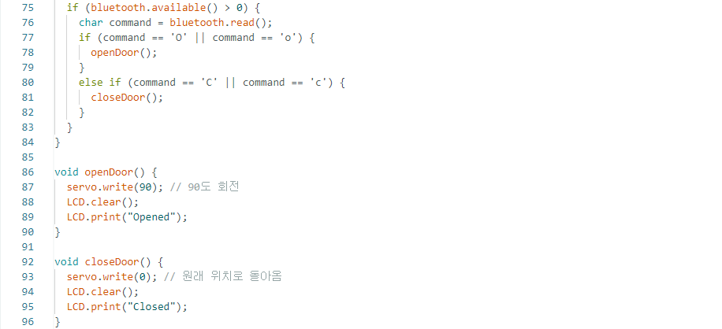

회로도
TinkerCad에 블루투스 모듈이 없어서 제외하고 그렸습니다.
코드
  코드 해석
playBuzzer 함수는 주파수와 지속 시간을 인자로 받아 피에조 부저를 울리는 함수입니다.
setup 함수에서는 시리얼 통신과 핀 모드 설정, LCD 초기화, 블루투스 통신을 초기화합니다.
loop 함수는 계속 반복되면서 초음파 거리를 측정하고, 거리에 따라 동작을 수행합니다.
초음파를 발사하고 돌아온 시간을 측정하여 거리를 계산합니다.
거리가 20cm 미만인 경우:
LED를 켜고, LCD에 "Open..."을 출력하며, 서보 모터를 90도 회전시킵니다.
playBuzzer 함수를 사용하여 피에조 부저를 울립니다.
일정 시간 동안 기다린 후 다음 동작을 수행합니다.
거리가 20cm 이상인 경우:
LED를 끄고, LCD에 "Close..."를 출력하며, 서보 모터를 원래 위치로 돌아가게 합니다.
일정 시간 동안 기다린 후 다음 동작을 수행합니다.
블루투스 통신을 통해 입력이 있는지 확인하고, "O" 또는 "C"가 입력되면 openDoor 또는 closeDoor 함수를 호출하여 서보 모터를 제어합니다.
openDoor 함수는 서보 모터를 90도 회전시키고, LCD에 "Opened"를 출력합니다.
closeDoor 함수는 서보 모터를 원래 위치로 돌아가게 하고, LCD에 "Closed"를 출력합니다.
이 코드를 사용하면 초음파 센서로 거리를 감지하고, 거리에 따라 서보 모터를 제어하여 문을 열고 닫을 수 있으며, 블루투스 통신을 통해 외부에서 제어할 수도 있습니다.